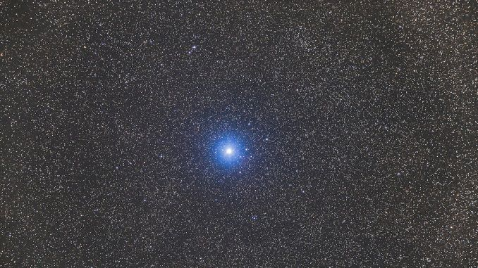
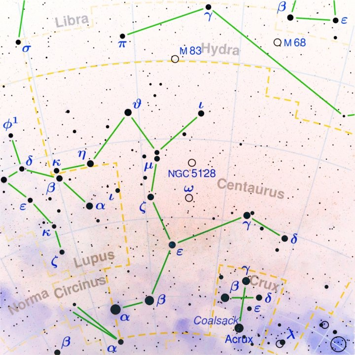

Hadar

Beta Centauri tem uma magnitude aparente visual de 0,60,[1] sendo facilmente visível a olho nu mesmo
em regiões urbanas com bastante poluição luminosa. É a décima ou 11ª estrela mais brilhante do céu noturno
(dependendo do brilho de Betelgeuse, que é variável) e a segunda mais brilhante da constelação de Centaurus
. Seu índice de cor B-V de -0,22[1] indica que tem uma coloração azul-branca, típica de estrelas de classe B.[7]
Está a apenas 4,5° de Alpha Centauri, a estrela mais brilhante da constelação e terceira do céu. As duas estrelas
são conhecidas como "ponteiros" até o Cruzeiro do Sul; uma reta passando por elas passa a menos de um grau de Gacrux,
a estrela no topo da Cruz. A reta que passa por Gacrux e Acrux é frequentemente usada para determinar o sul.[8]

Beta Centauri (β Centauri, β Cen), também conhecida como Hadar ou Agena, é a segunda estrela mais brilhante da constelação de Centaurus
e a décima mais brilhante do céu, com uma magnitude aparente de 0,60. Está a uma distância de 361 anos-luz (110,6 parsecs) da Terra.
Com base em uma declinação de -60°,[1] Beta Centauri pode ser vista de todo hemisfério sul, sendo circumpolar a sul do paralelo 30 S. No
hemisfério norte a estrela é visível apenas a sul do paralelo 30 N. Sua data de culminação às 21h é 7 de junho e à meia-noite é 23 de abril.
Beta Centauri (β Centauri, β Cen), também conhecida como Hadar ou Agena, é a segunda estrela mais brilhante da constelação de Centaurus e a décima
mais brilhante do céu, com uma magnitude aparente de 0,60. Está a uma distância de 361 anos-luz (110,6 parsecs) da Terra.
Desenvolvedoras:
MARIA LUIZA GONÇALVES PEREIRA
NICOLY RILLARY BRITO DA SILVA